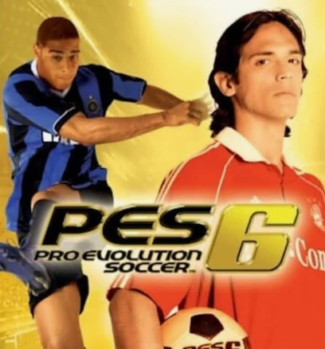

Jogo de navegador
Pro Evolution Soccer 6
Reviva um dos grandes clássicos dos jogos de futebol com Pro Evolution Soccer 6, também conhecido como PES 6, diretamente no navegador.
O jogo é hospedado em um site externo e será aberto em uma nova aba.
Abrir o jogo